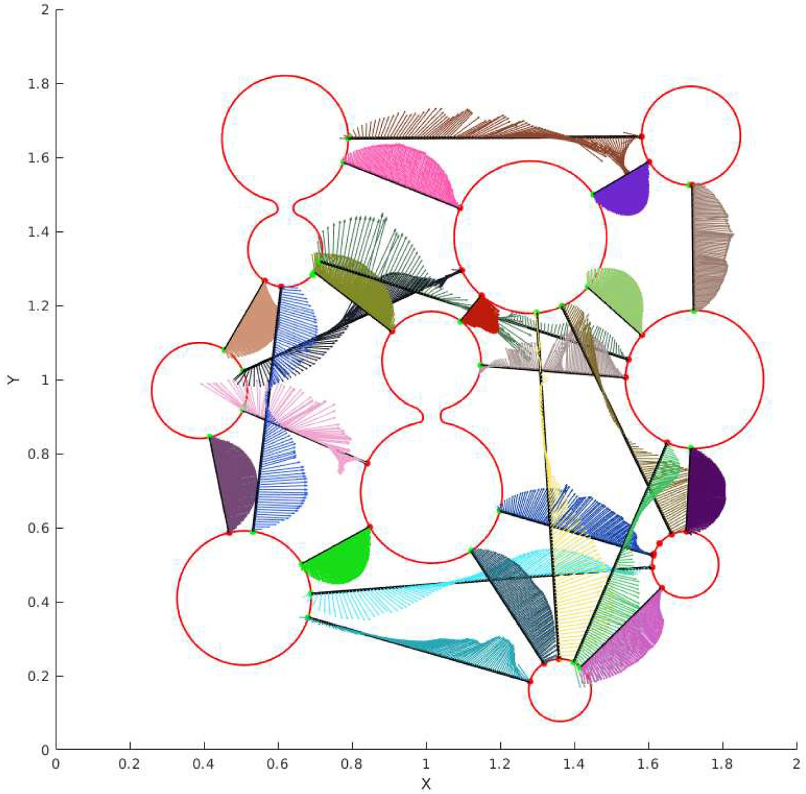
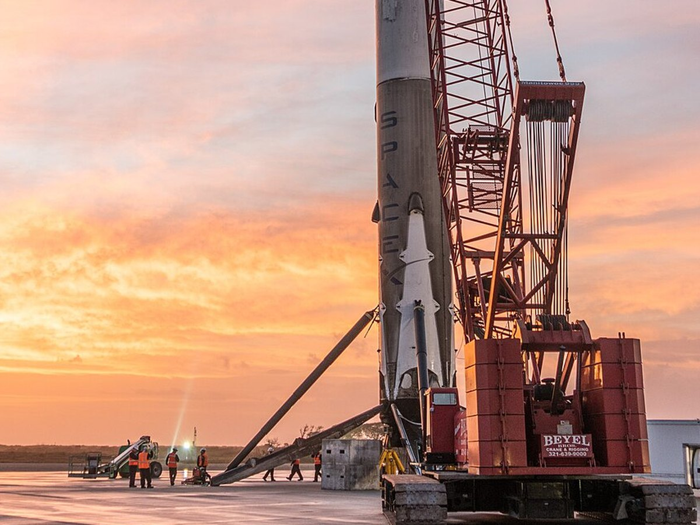
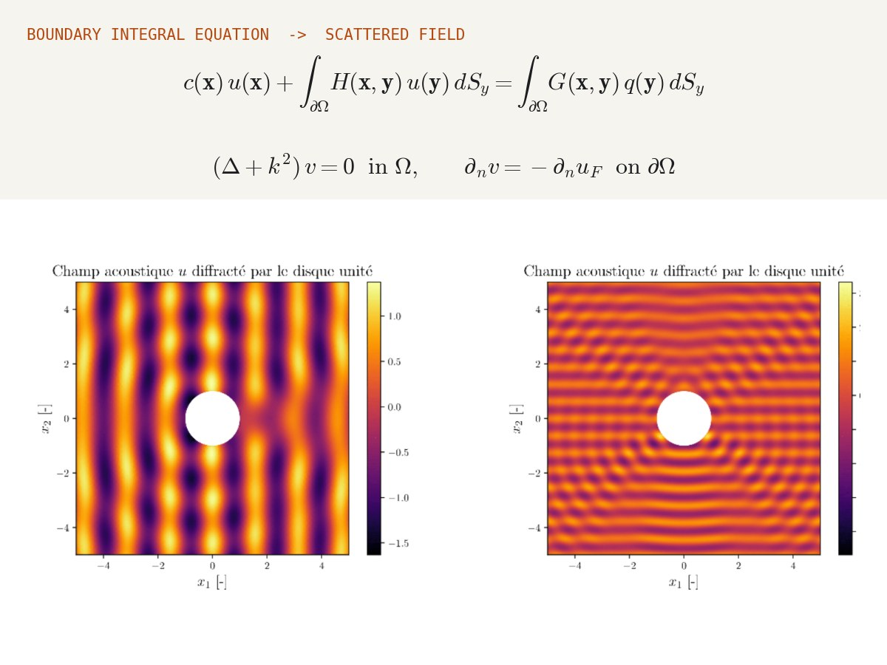
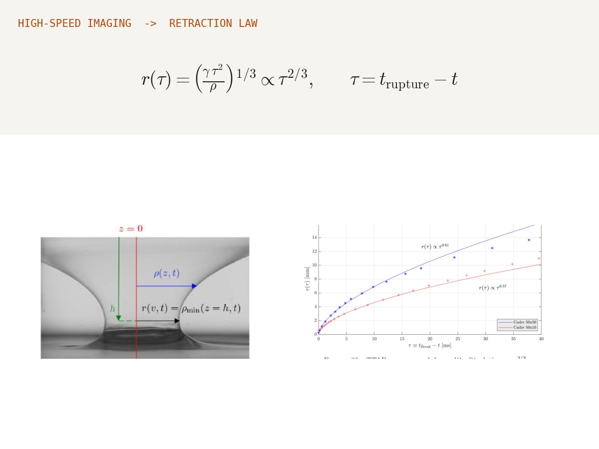
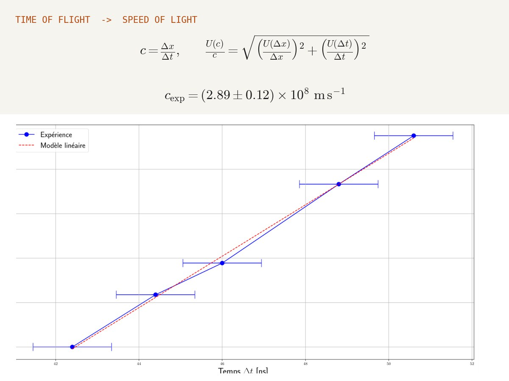

التشغيل والاعتماد
الاستلام في المصنع وفي الموقع، التحقق باستخدام مراجع معايرة معتمدة، خطط اختبار للتكرارية والانحراف، متطلبات التركيب، وإجراءات مكتوبة بمعايير قبول واضحة.
مهندس ميكانيك · باريس
تشغيل المعدات، أتمتة الاختبارات والروبوتات. أنقل الجهاز من صندوق التسليم إلى منظومة مُعتمَدة ومؤتمتة يستطيع الآخرون استخدامها بثقة — وأطمح إلى مواصلة ذلك في الأنظمة الروبوتية وأنظمة الحركة.

01 — المجالات
الاستلام في المصنع وفي الموقع، التحقق باستخدام مراجع معايرة معتمدة، خطط اختبار للتكرارية والانحراف، متطلبات التركيب، وإجراءات مكتوبة بمعايير قبول واضحة.
تسلسلات مؤتمتة بلغة Python وبرنامجَي LabVIEW و NI TestStand؛ محركات مؤازرة وأجهزة قياس عبر Modbus TCP وناقل CAN؛ اقتناء بيانات NI؛ وأنماط تراجع آمنة حتى لا ينتهي أي اختبار بشكل سيئ.
التحكم في المحاور، وتكامل المستشعرات والمشغّلات. من تسلسل جهاز هبوط لصاروخ إلى منصة مؤازرة بأربعة محاور، هنا أريد أن أتطوّر: خلايا روبوتية، منصات حركة، وأنظمة ألعاب المدن الترفيهية.
02 — العمل الحالي
مختبر MSME (UMR 8208 CNRS)، جامعة غوستاف إيفل · منذ سبتمبر 2026
أتولّى مسؤولية المنصة التجريبية للمختبر: منصات الصوتيات، والنفاذية، والحرارة، والاختبارات الميكانيكية متعددة المحاور. أقوم بتشغيل الأجهزة الجديدة، وأتمتة المنصات، والصيانة الوقائية والتصحيحية (نظام إدارة الصيانة)، وأرافق الباحثين خلال حملات الاختبار.

أتمتة · تحكم في الحركة
أربعة محركات مؤازرة من Festo يتم التحكم فيها عبر Modbus TCP، وقياس القوة بأجهزة NI، ومزامنة الكاميرا لتقنية ارتباط الصور. كتبت تسلسلات الاختبار المؤتمتة (Python, LabVIEW, NI TestStand) مع نمط تراجع آمن، ثم دفتر مختبر وملف تسليم ليتمكن أي مستخدم جديد من تشغيل المنصة بمفرده.
الخطوة التالية على المنصة نفسها: تحريك نافذة الإغلاق بمحرك، مع ملف انطلاق يفصل بين ما هو مُثبت وما يجب قياسه بعد.

تشغيل · استلام
تم تشغيله في موقع شريك صناعي: استلام من الشركة المصنّعة، تحقق باستخدام مادة مرجعية معتمدة، ثم خطة اختبار تشمل التكرارية والانحراف والعينات المرجعية قبل دخول الجهاز الخدمة.
بالتوازي، إعداد متطلبات التركيب لنحو خمسة عشر جهازًا (تيار ثلاثي الطور 400 فولت، هواء مضغوط 8 بار، ماء تبريد، حمولة أرضية 2 طن، السلامة من الحرائق) ومقارنة الموردين في فرنسا وسويسرا والمملكة المتحدة (من 17 إلى 100 ألف يورو)، وعرضها على لجنة التوجيه.


إجراءات · جودة
أربعة إجراءات كُتبت انطلاقًا من المعايير ومن تجارب فعلية على المنصات: أنبوب المعاوقة (ISO 10534-2)، مقاومة تدفق الهواء (ISO 9053-1)، المسامية المفتوحة، والموصلية الحرارية بطريقة المصدر المستوي العابر (ISO 22007-2). يغطي كل إجراء المنهجية ومعايير القبول وضبط الجودة وتشخيص الأعطال، لتبقى النتائج قابلة للمقارنة أيًّا كان المشغّل.
أنبوب المعاوقة ← مقاومة تدفق الهواء ← المسامية المفتوحة ← الحرارة (Hot Disk) ←

مراجعة قبل التشغيل · اتصالات صناعية
مراجعة تقنية لمنصة SAIREM MicroChem (من 0 إلى 200 واط، 2.45 غيغاهرتز) قبل تشغيلها: جرد المعدات، الوثائق، برنامج التحكم ووصلته Modbus RTU / RS485، إضافة إلى دليل للمبتدئين لفائدة الفريق.
03 — البحث

Journal of Computational Physics, 2026 · doi:10.1016/j.jcp.2026.115533
معادلات نافييه–ستوكس على شبكات رباعية متكيفة، مع تمثيل الواجهة بطريقة مجموعة المستوى وشرط ستيفان لتتبّع الترسيب والذوبان داخل وسط مسامي: كيف تنمو الحبيبات وتندمج، وكيف تتغير النفاذية والتعرّج بحسب أعداد بيكليه ودامكولر ورينولدز. عمل أنجزته خلال تدريب الماستر في جامعة كاليفورنيا، سانتا باربرا.
04 — المشاريع
انقر على أي مشروع لرؤية كل التفاصيل: الملخص، الجانب التجريبي، المعادلات والأشكال (الصفحات بالإنجليزية).

2024 · جامعة كاليفورنيا سانتا باربرا
عددي · مُتحقَّق منه · منشور
محاكاة بواجهة حادة، تم التحقق منها على مسألة مرجعية، ومقال كمؤلف أول.
اقرأ المزيد ←
2023–2024 · جمعية Top Aéro
ميكاترونيك · تحكم
أرجل قابلة للطيّ بـ SolidWorks، تسلسل الفتح والتحكم في الهبوط.
اقرأ المزيد ←
2023 · معهد دالمبير، السوربون
أداة عددية · مُتحقَّق منها
حلّال BEM مكتوب من الصفر بلغة Python، مقارن بالحلول التحليلية و Abaqus.
اقرأ المزيد ←
2023–2024 · مشروع شخصي
Abaqus · تحقق
تحليل ساكن وديناميكي لعارضة محمّلة مقارنةً بالحلول التحليلية.
اقرأ المزيد ←
2021 · مختبر نافييه
منصة تجريبية · كاميرا عالية السرعة
تصميم المنصة وبناؤها، تصوير بأكثر من 1000 صورة/ثانية، ومعالجة بـ Python.
اقرأ المزيد ←
2020–2021 · مختبر ESYCOM
قياسات الترددات الراديوية · اقتناء مؤتمت
مسح مؤتمت بمحلل الشبكات، معالجة بـ MATLAB، الكفاءة بين 1.2 و3.2 غيغاهرتز.
اقرأ المزيد ←
2021–2022 · المدرسة العليا للأساتذة
أجهزة القياس · الارتيابات
قياس سرعة الضوء بدقة 3.5٪؛ بناء مجهر قوة ذرية ومعايرته.
اقرأ المزيد ←
2021 · المدرسة العليا للأساتذة
تصميم تجربة · انعدام الجاذبية
مقترح فريق لتجربة في انعدام الجاذبية، اختير في القائمة الأولية.
اقرأ المزيد ←05 — الخبرة
مختبر MSME، المركز الوطني للبحث العلمي، جامعة غوستاف إيفل التفاصيل ←
ثانوية وإعدادية موريس روندو، بوسي سان جورج
جامعة كاليفورنيا سانتا باربرا، الولايات المتحدة التفاصيل ←
باريس التفاصيل ←
جمعية Top Aéro، السوربون / آرتس إي ميتييه التفاصيل ←
معهد جان لو روند دالمبير، جامعة السوربون التفاصيل ←
ديزني لاند باريس
المدرسة العليا للأساتذة، باريس التفاصيل ←
مختبر نافييه، المدرسة الوطنية للجسور والطرق التفاصيل ←
مختبر ESYCOM، جامعة غوستاف إيفل التفاصيل ←
06 — المسار
07 — اهتمامات
الألعاب الترفيهية آلات أحبها: منصات الحركة، أنظمة الإطلاق، الدمى الآلية، التحكم في العروض ومنطق السلامة الذي يقف وراءها. عملت مشغّلًا للألعاب في ديزني لاند باريس، والعمل على هذه الأنظمة — في ديزني أو غيرها — هو هدفي على المدى البعيد.
أتابع تعلّم الآلة عن كثب وأستعمل أدوات الذكاء الاصطناعي يوميًا في عملي. يهمني بشكل خاص ما يمكن أن يقدّمه للاختبارات: رصد الانحرافات والحالات الشاذة في بيانات القياس، تسلسلات اختبار أذكى، والصيانة التنبؤية.
الأسواق المالية نظام آخر أحب فهمه: البيانات والنماذج والمخاطر. أستمتع بالجانب الكمي: مواجهة النموذج بالبيانات الحقيقية ومعرفة أين يصمد وأين يخفق.
متاح ابتداءً من مطلع 2027، ومنفتح على المغرب ودول الخليج والولايات المتحدة (جنسية فرنسية، مؤهَّل لبرنامج V.I.E).